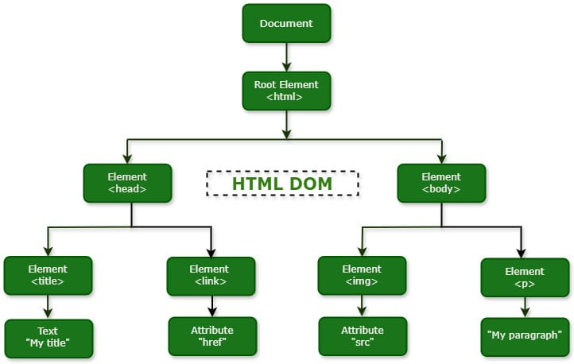
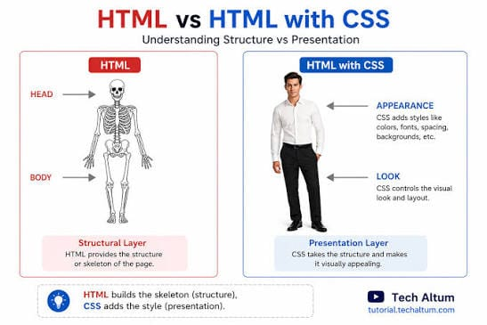
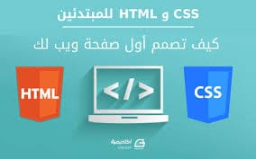

لغه ال cssوهي اختصار ل cascading styhe scheets اوراق الانماط المتتاليه وهي احدي التقنيات الاساسيه والمستخدمه في بناء وتصميم صقحات الويب بجانب لغتي html,javascript إذا كانت لغة HTML تُستخدم لبناء الهيكل العظمي للموقع وإضافة المحتوى الأساسي كالنصوص والأزرار والجداول، فإن لغة CSS هي المسؤولة الكاملة عن مظهر هذا الهيكل وشكله الخارجي.
الفلسفة الأساسية التي قامت عليها لغة CSS هي الفصل التام بين محتوى الصفحة (HTML) وشكلها الخارجي (CSS). هذا الفصل يمنح مطوري الويب مرونة عالية جداً وسهولة في الإدارة والتحديث، حيث يمكن تغيير شكل موقع كامل يحتوي على مئات الصفحات من خلال التعديل في ملف CSS واحد فقط، دون الحاجة للتعديل على نصوص صفحات
توجد ثلاث طرق أساسية لاستخدام لغة CSS داخل مشروع الويب:
1. الربط الخارجي (External CSS):
كتابة الأكواد في ملف مستقل ينتهي بـ css. وربطه بالصفحة عن طريق وسم link، وهي الطريقة الأفضل والأكثر استخداماً في المشاريع الاحترافية.
2. الربط الداخلي (Internal CSS):
كتابة الأكواد التنسيقية داخل وسم style في الجزء العلوي (رأس الصفحة) لملف HTML.
3. الربط المباشر (Inline CSS):
كتابة التنسيق مباشرة داخل العنصر المراد تعديله باستخدام الخاصية "style=..." داخل وسم HTML نفسه.
| وجه المقارنة | head | body |
|---|---|---|
| المكان في الشجرة | الابن الشمال لـ html | الابن اليمين لـ html |
| بيظهر للمستخدم؟ | لا، مخفي | اه، هو اللي بيظهر |
| أولاده | title و link | img و p |
| وظيفته | معلومات عن الصفحة | محتوى الصفحة نفسه |
| النوع | المثال | وظيفته |
|---|---|---|
| Document | Document | جذر الشجرة كله |
| Element | html, head, body, img | تاج HTML |
| Attribute | href, src | بيوصف العنصر |
| Text | My title, My paragraph | الكلام اللي جوه العنصر |


| المقارنة | HTML | CSS |
|---|---|---|
| وظيفته | بيبني الصفحة | بيزين الصفحة |
| مثال | h1, p, img | color, background, font-size |
| من غيره | مفيش صفحة أصلا | صفحة موجودة بس شكلها وحش |

تعد لغه cssمن اهم لغات صفحات الويب حيث تساعد علي شكل المواقع وتنسيق عناصرها وتعمل مع htmlلانشاء صفحات سهله وبسيطه للاستخدام